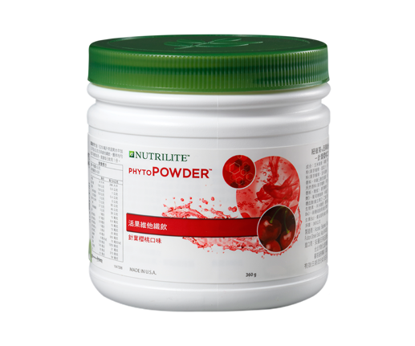

<div class="product_detail_content">
    <div class="picture">
        <div id="owl-demo" class="owl-carousel owl-theme">
            <div class="item"><span class="volume">360公克</span></div>
        </div>
    </div>
    <div class="infomation">
        <h3>針葉櫻桃天然飲品<br><span class="small">100%天然！暢快補充維生素C</span></h3>
        <p>好喝的飲料都高熱量、高糖份？本產品來自紐崔萊天然有機農場栽種的針葉櫻桃，針葉櫻桃含有豐富維生素C，每顆的維生素C含量相當於4顆柑橘。天然針葉櫻桃濃縮製成，好喝又營養！</p>
        <h4>產品特色</h4>
        <ul class="list_dot">
            <li>每份提供60毫克的100%天然維生素C</li>
            <li>紐崔萊獨特針葉櫻桃蔬果菁華提供豐富天然維生素C及多種珍貴的植物營養</li>
            <li>每份200毫升僅72大卡熱量</li>
            <li>每包可沖泡1公升的100%天然C飲品</li>
        </ul>
        <!-- <a class="download" href="pdf/products_acerola_cherry.pdf" target="_blank">營養成分PDF</a> -->
        <div class="btnWrap">
            <div class="showDetail">營養成分</div>
            <a class="download" href="pdf/products_acerola_cherry.pdf" target="_blank">下載PDF</a>
            <a class="buynow" href="https://shop.amway.com.tw/%E7%87%9F%E9%A4%8A%E4%BF%9D%E5%81%A5/%E7%B6%AD%E7%94%9F%E7%B4%A0-%E7%A4%A6%E7%89%A9%E8%B3%AA%E7%B3%BB%E5%88%97/%E6%B4%BB%E6%9E%9C%E7%B6%AD%E4%BB%96%E7%BA%96%E9%A3%B2%E2%94%80%E9%87%9D%E8%91%89%E6%AB%BB%E6%A1%83%E5%8F%A3%E5%91%B3/p/2638" target="_blank">立即購買</a>
        </div>
        <div class="detailTable">
            <table class="tableizer-table">
                <thead>
                    <tr class="tableizer-firstrow">
                        <th>重要營養成分</th>
                        <th>200毫升</th>
                    </tr>
                </thead>
                <tbody>
                    <tr>
                        <td>維生素C</td>
                        <td>60 毫克</td>
                    </tr>
                </tbody>
            </table>
        </div>
    </div>
</div>
